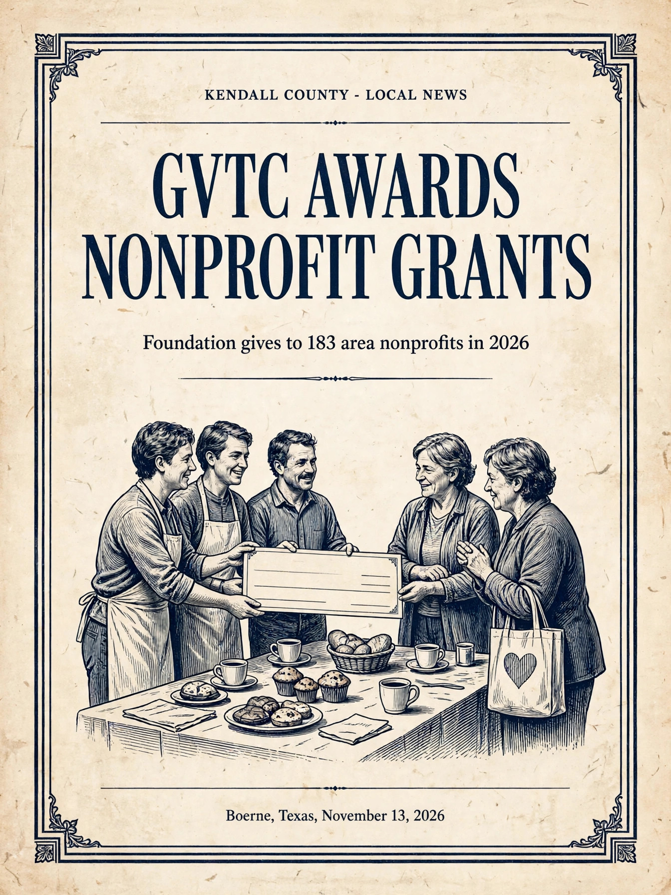

Community | November 13, 2026
The GVTC Foundation awarded 662,754 dollars in Texas Community Grants to 183 nonprofit organizations in 2026 across two funding cycles, with awards from 500 to 15,000 dollars, and marked the total at its 20th Fall Giving Breakfast on November 10.
Sports | November 13, 2026
Boerne High beat San Antonio Brackenridge 56-14 on Thursday night, November 12, at Boerne ISD Stadium in the first round of the Class 5A Division II playoffs, improving to 11-0 and advancing to the area round.
Sports | November 12, 2026
Boerne High beat O'Connor 56-42 and Boerne Champion beat Roosevelt 49-31 in their girls basketball season openers, and the Geneva boys beat Savio 57-37.
Community | November 12, 2026
Christmas in Comfort returns to the Comfort Historic District on Saturday, November 28, for its 40th year, with more than 100 vendors, a tree lighting at 6:30 p.m., a lighted night parade at 7 p.m., and fireworks after the parade.
Wire History Desk | November 11, 2026
On November 11, 1992, a bronze sculpture by local sculptor Jay Hester was unveiled atop the Graham monument at Boerne's Veterans Plaza, crowning the 1923 memorial to Kendall County's World War I dead.
Community | November 11, 2026
New World screwworm has been detected in Bandera County, and the Texas Animal Health Commission has put Bandera and Medina counties back under an infested zone.